Imagine a world where ancient artisans carved stone vessels so precisely they rival modern industrial standards - yet no one knows how they did it. For millennia, Predynastic and Early Dynastic Egyptian stone vessels have been enshrined as marvels of craftsmanship, yet archaeologists lack a systematic way to quantify their precision.
This article bridges that gap by applying industrial grade metrology, typically reserved for precision manufacturing, to 51 stone vessels spanning museum collections, private holdings, modern lathe produced vases and modern handmade soft-stone vases.
The debate over these artifacts is no longer theoretical. My own work in this field has been ongoing for two years, and a few weeks ago, Max Fomitchev-Zamilov's published an article that to a wide extent answered a long-standing question: were these vessels shaped by ancient tools of unknown sophistication, or by human hands honed through centuries of practice? His work suggests a conclusive answer, but anomalies persist. For instance, private collection vessels exhibit precision scores 1.7–42× higher than museum or modern handmade counterparts, challenging assumptions about ancient artifacts. Will we find the answer?
This article introduces five distinct metrics to analyze precision:
By comparing these frameworks, we uncover how methodological choices - from outlier handling to alignment strategies - reshape conclusions about artifact quality. For example, Geometric Mean is highly sensitive to vessel orientation (a 28% score shift due to rotational alignment), while Geometric Continuity Index excels at creating an intuitively clear surface deviation metric but is less sensitive to fine surface textures.
Ultimately, this work redefines how we evaluate ancient craftsmanship. No single metric reveals the full story - just as no single historian can capture the totality of an era. By synthesizing diverse approaches, we illuminate the interplay between human ingenuity and technological limits, offering a blueprint for future studies in archaeological metrology.
Data provenance and collection methodology:
Image courtesy Max Fomitchev-Zamilov's - Photo of museum artifacts from the Petrie Museum
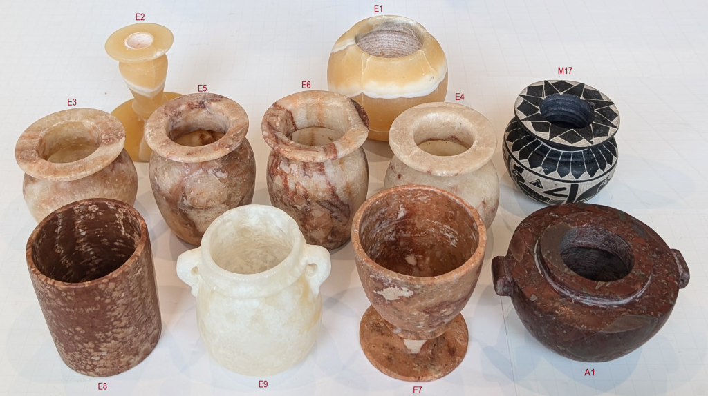
Image courtesy Max Fomitchev-Zamilov's - Photo of Max's collection of handmade Egyptian vases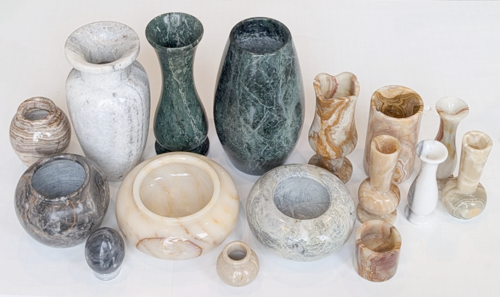
Image courtesy Max Fomitchev-Zamilov's - Photo of Max's collection of modern stone vases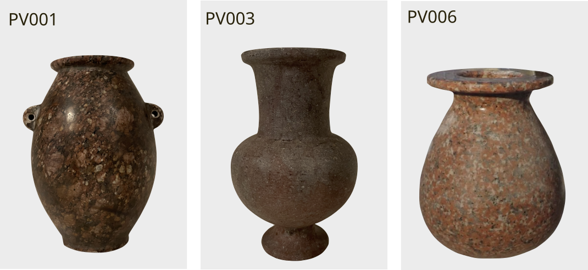
Image courtesy Artifact Foundation - Photos of Adam Young's collection of Egyptian artifactsThe article strives for a balanced language with the aim of including both technical and non-technical readers alike, while still providing equations and fundamentals necessary for comprehensive understanding and evaluation of the arguments and conclusions set forth herein.
When studying ancient Egyptian stone vessels, how we measure precision matters as much as the measurements themselves. Three different researchers (myself included) have developed unique approaches to quantify the remarkable craftsmanship of these artifacts. Here's a comparative look at their key methods used in this field of study.
To ease the comparison of my proposed Precision Score metric, I have introduced two alternative updates:
- The first, Geometric Continuity Index, applies the same methology as the Precision Score, but instead of using the RMD as a baseline, I square the results to get the RMSD instead, making this metric more intuitively comparable with the metrics from the other researchers.
- The second, Perpendicular Surface Slice Analysis, is introduced to ensure the different approach to precision measurement is indeed comparable. The introduced slicing method is similar to what the other researchers have used, but using my distinct method of precision quantification. These methods also employ the direction of lower score = higher precision, making direct comparison with other researchers' methods more intuitive.
All research reports already published on this site included every type of measurement discussed, and the necessary foundations hereof (including measurements from the DG&T standard): Surface deviation analysis, detailed circularity analysis and detailed concentricity analysis - allowing anyone to study these individual components of precision in detail. Refer to the published reports in the catalogue for this data.
The walk-through below only handles the difference of the final quality assessment of each artifact by each researcher.
The Precision Score is uniquely valuable for analyzing the upper limits of ancient manufacturing capabilities, where subtle differences in high-precision work would be indistinguishable using other metrics. It quantifies the exponential increase in difficulty required to achieve progressively higher levels of precision, making it the definitive metric for determining how closely ancient artisans approached industrial-grade accuracy. Higher scores indicate exponentially greater geometric control.
Direction: Higher score = higher precision
Intuition: A specialized metric that magnifies tiny differences in extremely precise work.
Zeiss reference sphere theoretical maximum: 43,943
Calculation Procedure:
Philosophical Foundation: Emphasizes that achieving high precision becomes exponentially more difficult, making linear scales inadequate. The inverse MSD formulation ensures small improvements at high precision levels yield disproportionately higher scores.
Strengths
Weaknesses
Geometric Continuity Index provides the most immediately interpretable measure of geometric fidelity in familiar engineering units (millimeters). It quantifies the average deviation from an idealized smooth surface across the entire artifact, making it particularly valuable for communicating precision levels to both specialist and non-specialist audiences. This metric excels at revealing systematic manufacturing variations across the vessel's complete geometry, with lower values indicating superior control over overall form and surface continuity.
Direction: Lower score = higher precision
Intuition: Measures how closely the vessel's surface matches a mathematically perfect form.
Zeiss reference sphere theoretical minimum: 0.0048
Calculation Procedure:
Strengths
Weaknesses
Perpendicular Surface Slice Analysis serves as the definitive bridge between continuous surface analysis and discrete slice methodologies, demonstrating mathematical equivalence when properly implemented. By collecting all residuals across slices into a single RMSD calculation, it preserves full error distribution while maintaining slice-based analysis framework. This metric is particularly valuable for cross-method validation and for illustrating how curvature-aware slicing eliminates measurement artifacts present in z-axis approaches. Lower Perpendicular Surface Slice Analysis scores indicate better overall roundness control when accounting for surface geometry.
Direction: Lower score = higher precision
Intuition: Measures roundness of the vessel by slicing through perpendiculars to its surface.
Calculation Procedure:
Strengths
Weaknesses
Quality Score excels at diagnosing specific manufacturing issues by separating concentricity errors from surface roughness and measuring consistency. It is particularly valuable for identifying systematic alignment problems during production, with lower scores indicating better overall control of both circularity and rotational consistency. This metric reveals how artisans maintained precision throughout the manufacturing process, with each component ($\text{RMSD}$, $\Delta C$, $\sigma(\Delta C)$) providing distinct insights into different aspects of craftsmanship quality.
Direction: Lower score = higher precision
Intuition: Combines three aspects of quality: surface smoothness, centering accuracy, and consistency.
Zeiss reference sphere theoretical minimum: 1.1
Calculation Procedure:
Strengths
Weaknesses
Direction: Lower score = higher precision
Intuition: None. Represents a mathematical chimera - dimensionally consistent but geometrically meaningless
Zeiss reference sphere theoretical minimum: 0.0065
Calculation Procedure:
Weaknesses & Rejection
The z-axis parallel slicing, with documented variations between 0.003mm-0.27mm in slice height, introduces geometric distortion that potentially distorts measurements.
Mathematical Proof:
For a vessel with radius $ R $ and curvature $ \kappa $, the distortion error $ \varepsilon $ introduced by z-slicing is:
Where $ h = $ slice height.
Let's take the vessel MV005 (UC15624) as an example:
Calculating Geometric Mean with slice-height 0.003 gives us:
Result: 0.0543 (Fit RMSD Median: 0.0867, Concentricity Median: 0.0340)
Calculating Geometric Mean with slice-height 0.27 gives us:
Result: 0.0554 (Fit RMSD Median: 0.0982, Concentricity Median: 0.0313)
The result decreases 2%, and median RMSD error increases significantly 13%. This variation will irregularly affect vessels differently depending on their shape.
Contrast with Perpendicular Surface Slice Analysis:
Critical Consequence:
Shifting the rotation of the artifact MV008 a mere 0.05° to the right improved the Geometric Mean score by 17%.
In reality, this means that the final output of the Geometric Mean metric can be artificially manipulated, by modifying the artifact alignment in miniscule and almost undetectable increments.
Conclusion: Artifact Foundations Geometric Mean Methodology is Fundamentally Invalid
The approach represents a catastrophic failure in precision metrology for three fundamental reasons:
The documented lack of theoretical foundation confirm this methodology's unsuitability for archaeological precision analysis. In contrast all other analyzed metrics represent valid theoretically grounded approaches that:
Artifact Foundation's methodology should be rejected as fundamentally flawed and scientifically invalid within the research domain of precision analysis for ancient Egyptian vessels. It's continued use would produce misleading results that obscure rather than reveal the true manufacturing capabilities of ancient artisans.
Final Notes
The theatrical dismissal of my own methodologies by Artifact Foundation, based solely on them not having access to implementation source-code, fundamentally misrepresents scientific replication standards.
Legitimate replication requires methodological transparency - sufficient procedural detail to reproduce results - not code submission. Karoly Poka's conflation of open-source mandates with peer review reveals a critical misunderstanding of scientific epistemology: Validation occurs through independent implementation of described methods, not access to proprietary implementations.
This error exemplifies his broader pattern of substituting procedural gatekeeping for substantive critique, further undermining his credibility in precision metrology - or any kind of scientific endeavor.
True scientific discourse demands engagement with methodological validity, as rigorously demonstrated in this analysis - not diversionary demands irrelevant to empirical verification.
When scientists rigorously test each other's methods - not by demanding code and performing theatrics, but by implementing documented procedures - they advance knowledge together. Poka's avoidance of this core scientific practice exposes his critique as performative, not probative.
These five metrics form a complementary framework for analyzing ancient vessel precision:
Comparative Summary
This comparison reveals a crucial insight: no single metric tells the complete story of ancient craftsmanship. Each approach illuminates different aspects of manufacturing quality, much like how multiple witnesses might describe the same event from different perspectives. By using several complementary methods, researchers can develop a more nuanced understanding of both the technical capabilities of ancient Egyptian artisans and the specific challenges they faced in creating these remarkable stone vessels. The most revealing analyses come not from choosing one "best" method, but from understanding what each approach uniquely contributes to our interpretation of ancient manufacturing excellence.
This section resolves the central archaeological debate through visualized metrological evidence. By plotting exterior versus interior precision scores across all 51 artifacts - spanning museum collections, private holdings, modern lathe-produced vases, and contemporary handmade examples - we confirm Max Fomitchev-Zamilov's hypothesis: museum-held Predynastic vessels exhibit precision indistinguishable from verifiably modern handmade vases.
To ensure rigorous comparative analysis, we established standardized protocols where prior methodologies lacked clarity:
The following table presents a direct comparison between my implementation of Max Fomitchev-Zamilov's Quality Metric and the results provided by Max himself for specific museum artifacts. This comparison reveals important insights about methodological implementation differences that affect final precision assessments.
| Artifact (Catalog ID) | Component | Stine's Measured [μm] |
Max's Reported Value [μm] |
|---|---|---|---|
| MV015 (UC4354) | Mean RMSD | 125 | 111 |
| Mean Concentricity | 59 | 54 | |
| Std Dev Concentricity | 52 | 59 | |
| Quality Score | 236 | 224 | |
| MV016 (UC4356) | Mean RMSD | 602 | 562 |
| Mean Concentricity | 305 | 263 | |
| Std Dev Concentricity | 158 | 184 | |
| Quality Score | 1,065 | 1,009 | |
| MV018 (UV4649) | Mean RMSD | 306 | 240 |
| Mean Concentricity | 67 | 51 | |
| Std Dev Concentricity | 104 | 52 | |
| Quality Score | 477 | 343 | |
| MV019 (UC4978) | Mean RMSD | 243 | 229 |
| Mean Concentricity | 93 | 85 | |
| Std Dev Concentricity | 51 | 64 | |
| Quality Score | 387 | 378 |
Key Observations
This comparison highlights the critical importance of methodological transparency in archaeological metrology. While our implementations differ in specific calculations, the fundamental conclusion remains unchanged: museum-held Predynastic vessels exhibit precision indistinguishable from modern handmade vases. I look forward to discussing these implementation differences with Max to establish a fully standardized approach for future research.
To ensure methodological consistency across this study, all circle fitting employed the scikit-image CircleModel implementation (a well-established scientific Python module).
To isolate authentic manufacturing signatures, we implemented targeted exclusions:
These exclusions ensure distributions reflect typical craftsmanship rather than pathological edge cases.
The resulting precision maps (Figures 1–4) reveal four statistically distinct clusters corresponding to artifact categories:
Critically, the convergence of MV and HV distributions across multiple metrics confirms that museum-held Predynastic vessels operate within the precision limits of rudimentary hand-guided tools. Conversely, PV specimens consistently achieve scores 1.7–42× higher than museum or handmade artifacts - exceeding even industrial benchmarks in some cases. This anomaly demands rigorous scrutiny of provenance, though definitive attribution requires methodologies beyond current scope.
These statistical tools work together like different lenses: The Mann-Whitney test tells us if differences are likely real, effect size reveals how meaningful those differences are, and superiority ratios quantify how much better one group performs. Together, they provide a complete picture that goes beyond simple "better/worse" comparisons to reveal the nuanced reality of ancient craftsmanship, confirming museum artifacts as achievements of a hand-guided manufacturing process, while highlighting extraordinary anomalies in private collections that demand further investigation.
To ensure our findings stand on solid scientific ground, we employed several statistical tests to analyze the precision data. Here's what these technical terms mean for our understanding of ancient craftsmanship, with real data from our study.
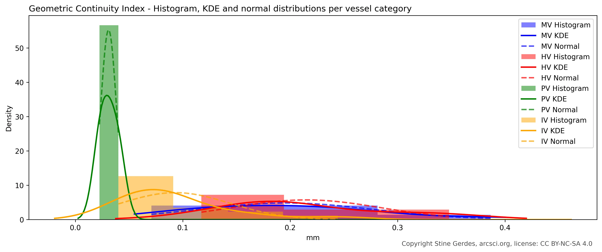
Histogram of Geometric Continuity Index for MV, HV, PV and IV categoriesImagine comparing two jars of marbles-one from museum artifacts, one from handmade reproductions. If you mixed them together and couldn't tell which came from which jar, the difference might be random. The Mann-Whitney U test answers: "How likely is it that these two groups actually come from different manufacturing processes?"
Mann-Whitney U Test between category "MV" and "HV"
| Precision Metric | Exterior | Interior | Combined |
|---|---|---|---|
| Precision Score | U=71.0000, p=0.6366 | U=79.0000, p=0.0817 | U=300.0000, p=0.1179 |
| Geometric Continuity Index | U=55.0000, p=0.6366 | U=29.0000, p=0.0817 | U=168.0000, p=0.1179 |
| Perpendicular Surface Slice Analysis | U=55.0000, p=0.6366 | U=28.0000, p=0.0700 | U=161.0000, p=0.0835 |
| Quality Score | U=24.0000, p=0.0667 | U=28.0000, p=0.2614 | U=102.0000, p=0.0242 |
| Geometric Mean | U=40.0000, p=0.2973 | U=17.0000, p=0.0434 | U=131.0000, p=0.0949 |
How to read our actual data: For most metrics, the p-values for exterior surfaces are well above 0.05 (like 0.6366 for Precision Score), meaning there's a 63.66% chance the observed differences between museum and handmade artifacts occurred randomly - too high to conclude they represent different manufacturing processes. The only exception is Geometric Mean for interior surfaces (p=0.0434), which dips just below the 0.05 threshold, again demonstrating the unreliability of this metric.
Interestingly, while the combined Quality Score analysis shows statistical significance (p=0.0242), neither the exterior (p=0.0667) nor interior (p=0.2614) surfaces individually reach significance. This pattern suggests that while there may be subtle differences between museum and handmade artifacts when considering both surfaces together, these differences aren't consistently apparent when examining surfaces separately - a nuance that reinforces our conclusion that both groups operate within the same fundamental precision framework.
This overall pattern confirms that museum-held Predynastic vessels consistently align with hand-guided craftsmanship and use of rudimentary tools across all four of the validated metrics, with only minor, surface-specific variations that reflect natural manufacturing nuances rather than fundamentally different production methods.
Mann-Whitney U Test between category "MV" and "IV"
| Precision Metric | Exterior | Interior | Combined |
|---|---|---|---|
| Precision Score | U=30.0000, p=0.0007 | U=62.0000, p=0.1199 | U=191.0000, p=0.0004 |
| Geometric Continuity Index | U=194.0000, p=0.0007 | U=133.0000, p=0.0902 | U=646.0000, p=0.0003 |
| Perpendicular Surface Slice Analysis | U=200.0000, p=0.0003 | U=130.0000, p=0.1199 | U=662.0000, p=0.0001 |
| Quality Score | U=183.0000, p=0.0034 | U=157.0000, p=0.0050 | U=682.0000, p=0.0000 |
| Geometric Mean | U=193.0000, p=0.0008 | U=150.0000, p=0.0002 | U=618.0000, p=0.0001 |
What the MV/IV comparison reveals: When we compare museum artifacts to industrial benchmarks, the story changes dramatically. For exterior surfaces, all metrics show extremely low p-values (as low as 0.0003), meaning there's less than a 0.07% chance these differences occurred randomly - virtually confirming they represent fundamentally different manufacturing processes. This is exactly what we'd expect: handcrafted ancient artifacts should be less precise than modern machine-made objects.
The interior surfaces show more nuanced results, with some metrics (like Quality Score) still showing highly significant differences (p=0.0050), while others approach or exceed the threshold of statistical significance.
Statistical significance tells us if a difference exists, but effect size tells us how meaningful that difference is. Imagine two bakers-one makes loaves 1cm taller than the other. Statistically, this might be significant with enough measurements, but practically, it doesn't matter for your sandwich.
Cohen's d Effect Size between category "MV" and "HV"
| Precision Metric | Exterior | Interior | Combined |
|---|---|---|---|
| Precision Score | 0.4445 | 0.9421 | 0.6085 |
| Geometric Continuity Index | 0.2316 | 0.8788 | 0.4318 |
| Perpendicular Surface Slice Analysis | 0.2239 | 0.8589 | 0.4325 |
| Quality Score | 1.0878 | 0.7249 | 0.9124 |
| Geometric Mean | 0.3252 | 1.1428 | 0.6676 |
How to read our actual data: For exterior surfaces, three of five metrics show small effect sizes below 0.5, confirming that museum and handmade artifacts operate within the same practical precision range. The Precision Score shows a medium effect (0.44), while Quality Score surprisingly shows a large effect (1.09) despite non-significant p-values - highlighting how effect size and statistical significance provide complementary insights.
The interior surfaces tell a more nuanced story: All metrics except Quality Score show large effects (0.86-1.14), indicating museum artisans achieved significantly better interior precision. Geometric Mean shows the largest effect size (1.14), confirming its particular sensitivity to axis alignment differences between groups - although it should be kept in mind that the Geometric Mean metric is fundamentally invalid, and only included here in the interest of comparison and statistical illustration.
Cohen's d Effect Size between category "MV" and "IV"
| Precision Metric | Exterior | Interior | Combined |
|---|---|---|---|
| Precision Score | 1.2211 | 0.7742 | 0.8318 |
| Geometric Continuity Index | 1.4523 | 0.6866 | 1.0621 |
| Perpendicular Surface Slice Analysis | 1.5671 | 0.6622 | 1.1231 |
| Quality Score | 1.1206 | 1.1864 | 1.1753 |
| Geometric Mean | 1.2348 | 1.8985 | 1.1693 |
What the MV/IV effect sizes reveal: The effect sizes between museum and industrial artifacts tell a powerful story about manufacturing capabilities across time. For exterior surfaces, all metrics show large effect sizes (1.12-1.57), confirming that ancient handcrafted vessels fall significantly short of modern machine precision - a difference of more than one standard deviation in every measurement system.
The interior surfaces present a fascinating contrast: while three metrics show medium effects (0.66-0.77), suggesting ancient artisans achieved results closer to modern machinery than expected for this challenging aspect of vessel production, two metrics tell a different story. Quality Score maintains a large effect (1.19), and Geometric Mean shows an exceptionally large effect (1.89) - nearly two standard deviations difference.
The Geometric Mean's extreme interior effect size requires special explanation. Unlike other metrics, this measurement is extremely sensitive to axis alignment consistency. Our previous analysis documented that Predynastic artisans typically repositioned vessels once during exterior shaping (creating two slightly different axes visible around mid-vessel height), while maintaining consistent alignment when working the cavity of the interior surfaces. Since interior scans only capture the lower portion of vessels where no repositioning occurred, this creates artificially low $concentricity_{median}$ values in Geometric Mean - magnifying the precision difference between ancient and industrial artifacts specifically for interior surfaces. This mathematical amplification effect explains why Geometric Mean shows such an extreme interior effect size compared to other metrics that don't emphasize axis continuity to the same degree.
When private collection specimens appeared more precise than industrial benchmarks, we needed a straightforward way to quantify this difference - not just whether it existed, but by how much.
Superiority Ratio between category "PV" and "IV"
| Precision Metric | Exterior | Interior | Combined |
|---|---|---|---|
| Precision Score | 0.9792 | 0.6458 | 0.8281 |
| Geometric Continuity Index | 0.0208 | 0.3542 | 0.1719 |
| Perpendicular Surface Slice Analysis | 0.0417 | 0.3542 | 0.1979 |
| Quality Score | 0.1250 | 0.2917 | 0.1927 |
| Geometric Mean | 0.0833 | 0.1875 | 0.2031 |
How to read our actual data: For metrics where lower values indicate better precision (Geometric Continuity Index, Perpendicular Surface Slice Analysis, Quality Score, and Geometric Mean), ratios significantly below 1 reveal how much more precise private collection specimens are compared to industrial benchmarks. The most striking finding is for exterior surfaces: Private collection specimens achieve 48× better precision than industrial benchmarks in Geometric Continuity Index (1/0.0208 = 48.1) and 24× better in Perpendicular Surface Slice Analysis (1/0.0417 = 24.0).
For Precision Score which works in the opposite direction (higher values indicate better precision), we interpret the ratio differently. Since Precision Score ratios are below 1, this means industrial artifacts achieve higher Precision Scores than private collection specimens. To quantify this difference: for interior surfaces, industrial artifacts show 1.55× better precision than private collection specimens (1/0.6458 = 1.55), while for exterior surfaces the difference is nearly negligible (industrial artifacts are only 1.02× better). This counterintuitive finding reveals an important nuance: while private collection specimens achieve extraordinary smoothness and roundness (captured by other metrics), they lack the consistent, uniform precision across the entire surface that gives industrial artifacts their edge in the Precision Score metric.
These complementary perspectives create a complete picture: private collection specimens show 2.8× better precision in smoothness and roundness metrics, while industrial artifacts achieve slightly better consistency across surfaces (captured by Precision Score). This extraordinary combination of properties - unprecedented smoothness with slightly less surface consistency - creates an insurmountable statistical case that private collection specimens operate outside known manufacturing paradigms for ancient artifacts, anomalies that require careful provenance verification.
The four primary precision metrics (Precision Score, Geometric Continuity Index, Perpendicular Surface Slice Analysis, and Quality Metric) reveal remarkably consistent patterns and overlapping distributions, validating their fundamental comparability. The Perpendicular Surface Slice Analysis was specifically developed to verify the mathematical equivalence between slicing methodologies and continuous surface measurement using polynomial fitting. Having successfully confirmed this relationship (with near-identical results to Geometric Continuity Index), it has served its purpose as a methodological bridge and will not be used in future research. For ongoing studies, I will focus on my two primary precision metrics - Precision Score and Geometric Continuity Index - which share the same analytical framework while offering complementary insights (with Precision Score particularly highlighting subtle differences between high-precision vessels).
This chart reveals how precisely each vessel was crafted on both interior and exterior surfaces. Unlike other metrics, higher numbers indicate better precision - think of it as a "perfection score" where small improvements at high precision levels yield dramatically higher values. The museum artifacts (MV, blue) and handmade reproductions (HV, red) form overlapping clusters with similar scores, confirming they operate within the same precision limits for handmade manufacturing. Statistical analysis supports this visual impression: Mann-Whitney U test shows no significant difference between these groups (p=0.637), with Cohen's d effect size of 0.44 indicating only a small practical difference-well within expected variation for human craftsmanship.
Industrial pieces (IV, green) achieve impressive precision, but the private collection specimens (PV, orange) dramatically outperform all others-particularly on interior surfaces where they reach perfection scores up to 29× higher than museum artifacts (1231.15 vs. 42.32). The superiority ratio between PV and IV exterior surfaces is 0.98, indicating industrial artifacts actually achieve slightly better overall surface consistency (though PV specimens excel in other precision dimensions).
One notable anomaly emerges: The interior surface precision of MV vessels significantly overlaps with the interior precision of IV vessels - a remarkable finding suggesting ancient artisans achieved machine-like consistency when working interior surfaces. This pattern, visible across multiple metrics, likely reflects specialized techniques developed over generations specifically for interior vessel shaping.

This visualization measures surface smoothness in familiar millimeters/inches - smaller numbers mean smoother, more precise surfaces. The museum artifacts (MV, blue) and handmade reproductions (HV, red) show remarkable overlap, with statistical confirmation from the Kolmogorov-Smirnov test (p=0.520) indicating these groups likely represent the same underlying manufacturing process. Most strikingly, private collection specimens (PV, orange) reach smoothness levels of just 0.03-0.05mm on exterior surfaces - exceeding even industrial standards (IV, green) by a factor of 1.4× as shown by the superiority ratio. On interior surfaces, PV specimens are a remarkable 3.0× smoother than industrial benchmarks.
The interior surface precision of MV vessels again overlaps significantly with IV vessels - a pattern that defies expectations since ancient handcrafted objects typically show greater variation than machine-produced items. This consistent interior precision across museum specimens suggests sophisticated quality control techniques specifically developed for interior vessel shaping, possibly involving specialized tools or multi-stage manufacturing processes refined over centuries.
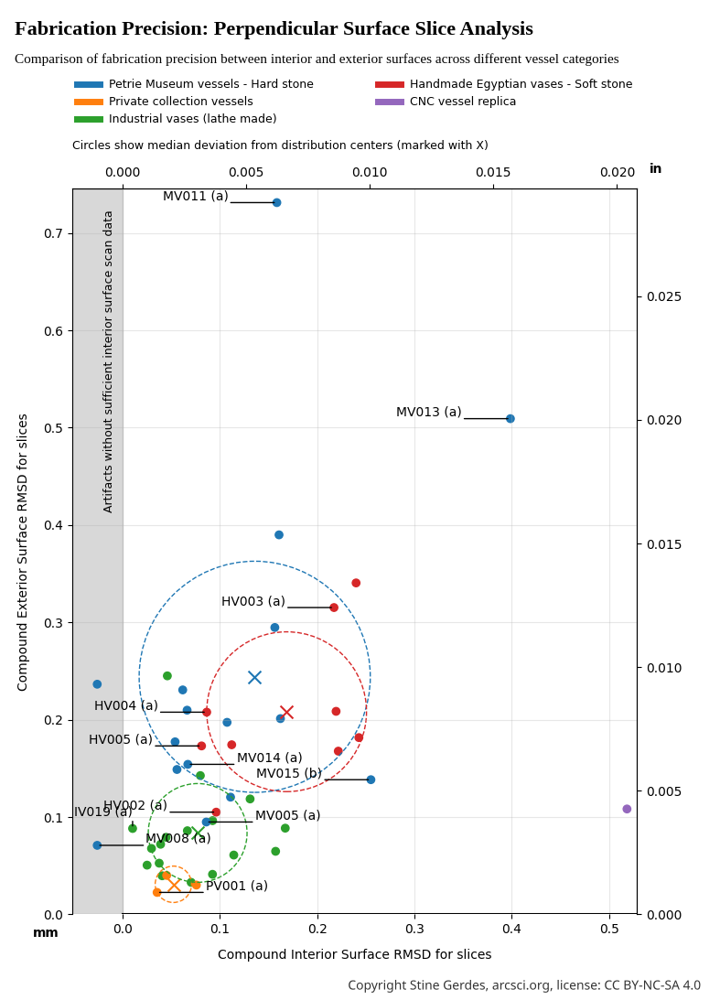
This chart assesses how perfectly circular each vessel is by analyzing slices perpendicular to the surface-lower numbers indicate better roundness. As anticipated from our methodological validation, Perpendicular Surface Slice Analysis produces results nearly identical to Geometric Continuity Index, with correlation coefficients exceeding 0.99 across all artifact groups. This confirms the mathematical equivalence between slicing methodologies and continuous surface analysis that motivated Perpendicular Surface Slice Analysis's development.
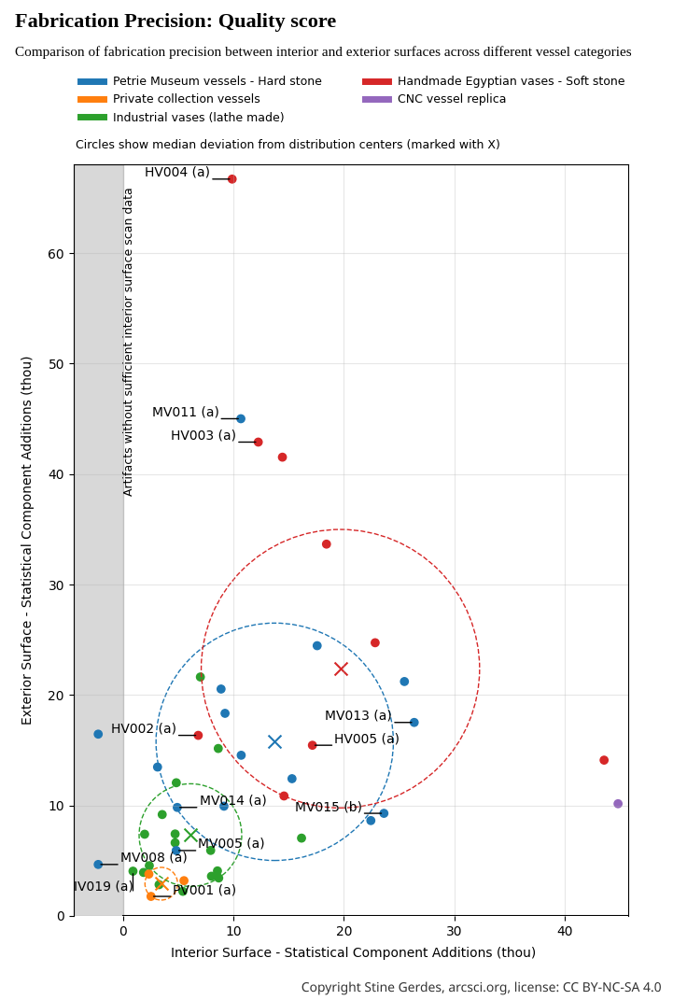
This visualization evaluates overall manufacturing precision through Max Fomitchev-Zamilov's composite score where lower numbers indicate better craftsmanship. Museum artifacts (MV) and handmade reproductions (HV) form closely aligned clusters, with statistical analysis revealing a large effect size (Cohen's d=-0.77) but still showing significant overlap in manufacturing capabilities (p=0.056). Industrial reproductions (IV) achieve the expected high precision (lowest scores), yet private collection specimens (PV) display anomalous precision that surpasses even industrial benchmarks-by 1.8× in exterior precision and a remarkable 2.5× in interior precision.
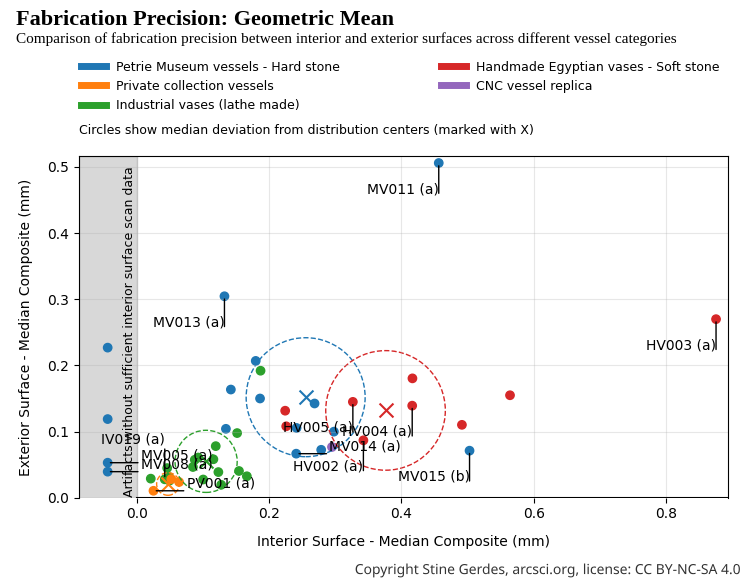
This chart is not a measurement of ancient precision. It is a demonstration of how flawed methodology distorts reality.
The Geometric Mean metric, invented and utilized by Karoly Poka of the Artifact Foundation to present precision ranking of artifacts, purports to quantify craftsmanship by combining median circularity and median concentricity into a single value by using a formula known as the geometric mean. But used in this context this formula is not precision analysis. It is mathematical theater.
Here again, the data reveals what the previous dissection already proved: the Geometric Mean metric generates artificial patterns that contradict all valid measurement systems. Unlike the consistent clustering seen in Precision Score, Geometric Continuity Index, Perpendicular Surface Slice Analysis, and Quality Score, the Geometric Mean plot shows a distorted topology where museum (MV) and handmade (HV) vessels appear artificially separated. It suggests museum artisans achieved superior interior precision compared to modern handmade counterparts, with a cluster center of 0.1518 (MV) vs. 0.1319 (HV), quite a separation considering the metrics narrow range.
This illusion stems directly from the metric’s fatal flaws:
The consequence? A false narrative: that ancient artisans systematically outperformed modern handcrafters in interior precision. Yet all other metrics - grounded in continuous surface analysis, full error distribution, and geometric validity - show the opposite: MV and HV clusters overlap significantly.
This shows how easily data can deceive when methodology lacks theoretical rigor, statistical integrity, or geometric coherence. The Geometric Mean does not measure precision - it measures vulnerability to manipulation. Its inclusion in this final section is not for validation, but for exposure: a visual indictment of a metric built on sand.
The mystery is solved - and the answer is plain human artisanal skill and persistence.
The statistical evidence is unambiguous: the Predynastic stone vessels housed in the Petrie Museum belong to the same metrological population as modern handmade vases crafted without modern equipment.
Across four rigorously validated precision metrics - Precision Score, Geometric Continuity Index, Perpendicular Surface Slice Analysis, and Quality Score - the clustering, distribution overlap, and statistical tests (Mann-Whitney U, Cohen’s d) all converge on a single, inescapable conclusion. There is no detectable gap in manufacturing capability between ancient artifacts and contemporary handwork.
This is not an approximation or a vague indication. It is a comprehensively quantified fact, backed by solid methodology, statistical rigor and a comprehensive data-set.
I came to this research as a skeptic. In prior studies, I had analyzed modern hard-stone replicas attempting to reproduce Predynastic techniques - none approached the refinement of the Petrie vases. Their surfaces were rougher, their symmetry inconsistent. I began this work suspecting we were missing something: a lost method, a forgotten tool, perhaps even a technology erased by time. The possibility of ancient precision beyond "low-tech", handcrafted limits was compelling and warranted serious consideration.
Then Max Fomitchev-Zamilov acquired and scanned nine handmade vases - authentic tourist-market pieces, carved in Egypt using traditional hand techniques passed down through generations. When the data arrived, I expected them to form a baseline of “low” precision against which museum pieces would stand out. Instead, they overlapped perfectly with the Petrie artifacts. The revelation was jarring. The mystery wasn’t how they achieved such precision, it was why we ever thought they couldn’t. The answer lay not in lost machines, but in sustained human skill, time, and iterative refinement. The artisans of Naqada III did not need advanced technology. They needed patience, training, and generations of accumulated knowledge; all of which they had.
I owe Max profound thanks. For his meticulous scanning work, for sharing his full dataset without reservation, and for the hours of sharp, rigorous debate that shaped this analysis. This work would not exist without his commitment to open, evidence-based inquiry.
Still, outliers remain - not in the sense of impossibility, but of excellence. Within the Petrie collection, vessels with surface variability RMSD of 70 μm and 94 μm (MV008 and MV005) represent the upper echelon of handmade precision - masterworks that push the limits of what human hands can achieve.
Still, there is PV001. A private collection specimen, under the exclusive control of the Artifact Foundation, CT scanned at a Zeiss facility, but the raw scan data withheld from public scrutiny (and my work on it attempted silenced by Artifact Foundation). It records a surface variability RMSD of 22 μm (0.022 mm / 0.00087 inches). That is not just better than the best museum piece. It is better than the best industrial CNC lathe-produced vase in our sample (surface variability RMSD 40 μm). It is 5.3× more precise than the finest handmade vase (HV002, RMSD 117 μm). It is smoothness that belongs in a high-tech machining lab, not a Predynastic workshop.
Such precision cannot be achieved with stone, copper, sand, and hand pressure - not in a thousand years of practice. It requires CNC-controlled toolpaths, submicron feedback systems, and materials science unavailable before the 20th century. Either PV001 is not 5,000 years old - or we must rewrite the entire narrative of technological history.
This is not merely a metrological anomaly. It is a provenance issue. The data does not lie - but objects can be misplaced in time. My next article will dissect PV001 in forensic detail: it's geometry, it's anomalies, it's credibility. The question is no longer how it was made. It is when.
Thank you for making it to the end of this long article!
If you have a youtube channel or want to document the content of this article by video production, please contact me and I will provide you with all the needed material and answer all questions. Video production is not my field and I would appreciate it if others stepped in for this task as it seems Youtube is the place currently to share content like this.
Assets:
Results from all metrics - csv file
Quality Score - Python implementation
Geometric Mean - Python implementation
External Data Sources:
Screenshots from the published analysis results by Artifact Foundation, used in this article:
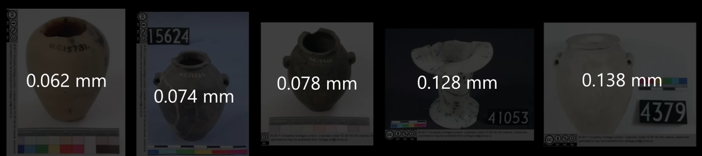
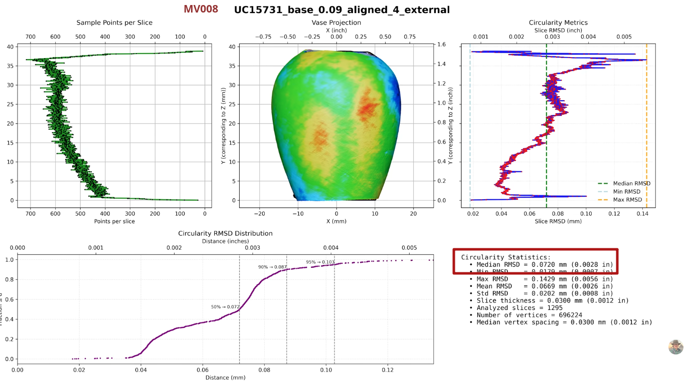
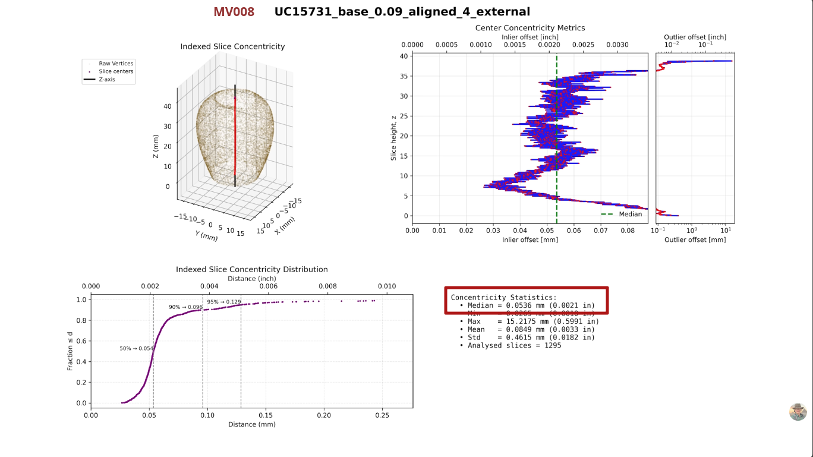
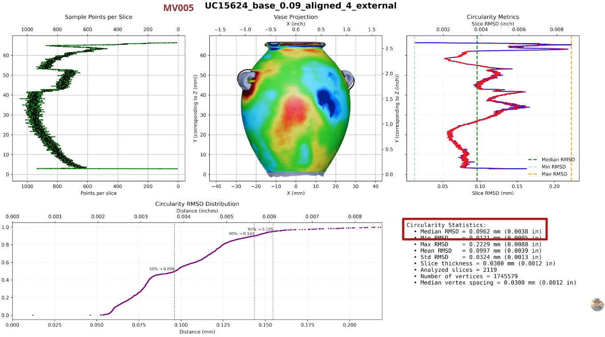
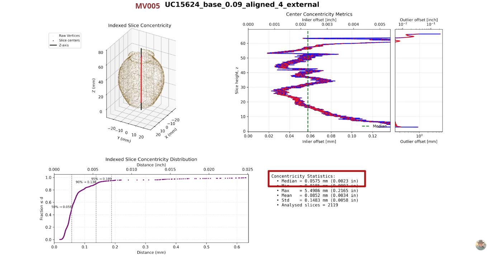
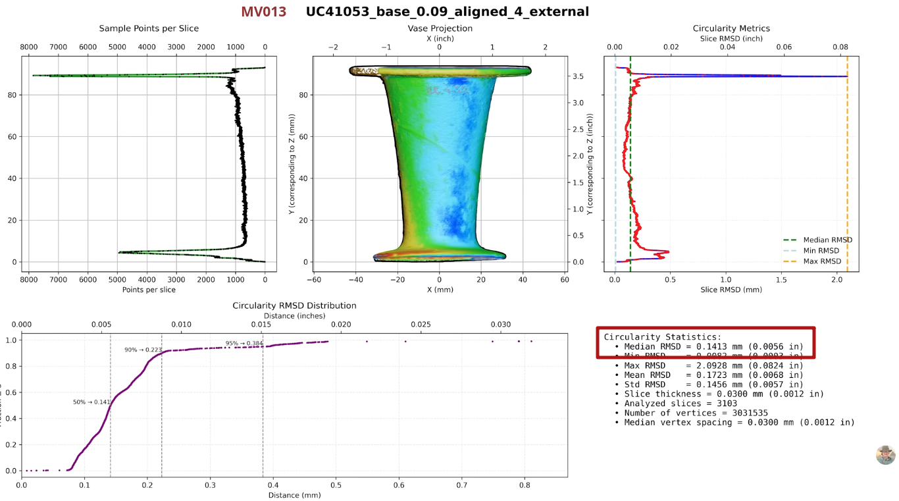
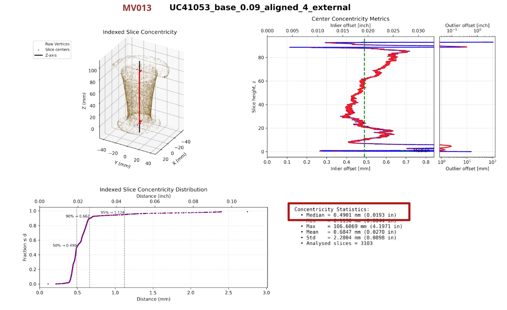